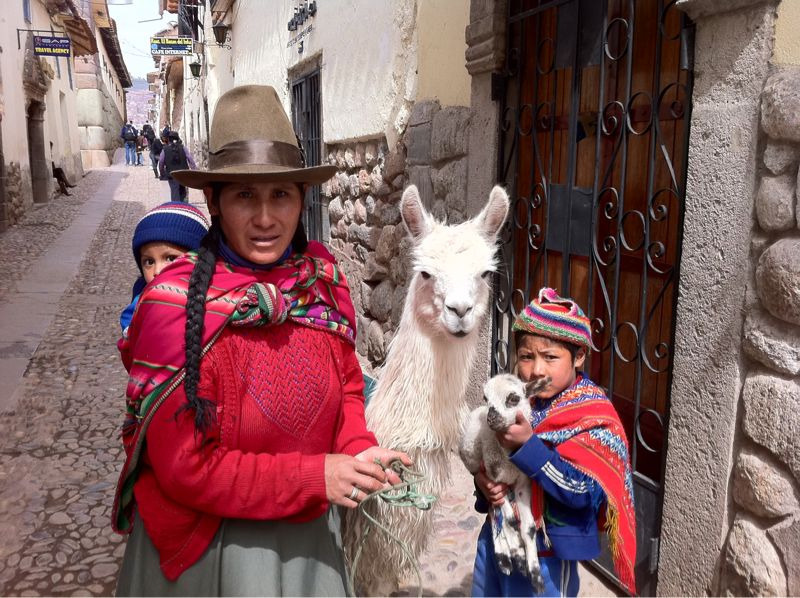

Sun, 03 Oct 2010 22:59:14 ·
greetings from cusco the inca ancient capital

Greetings from Cusco, the Inca ancient capital. Great li'l town full of colours, dizzying alleys, and ancient architecture dated back as far as 1200 A.D.
~ A snapshot of the locals on the street of Cusco.